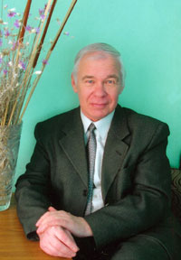

 Геннадий Долженко — автор книг о туризме, ставших хорошо известными специалистам (и не только), пришел в туризм в далеком сентябре 1960 г. В этот год, окончив 3-й курс Смоленского государственного института физической культуры, он получил должность инструктора по туризму Смоленского областного совета ДСО «Труд» и четыре года оставался единственным в Смоленской области штатным работником, в обязанности которого входило развивать туризм в своем регионе. Создавал в Смоленске первый клуб туристов, туристские секции на предприятиях, проводил первые туристские походы и слеты, соревнования по спортивному ориентированию.
Но однажды, попав в экспедицию по изучению четвертичных отложений и послушав споры ученых-геологов у вечернего костра, понял, что одного туризма ему мало и поступил в Ростовский государственный университет.
Геннадий Долженко закончил географическое отделение геолого-географического факультета РГУ, аспирантуру и в 1971 г. стал преподавателем кафедры физической географии. Ему была предложена учебная нагрузка, связанная с дисциплинами только что учрежденной на геофаке (впервые в Советском Союзе) специализации «Краеведение и методика организации туристско-экскурсионного дела». Произошло вторичное его обручение с туризмом, теперь навсегда.
Сейчас Геннадий Петрович Долженко уже 20 лет заведует созданной по его инициативе кафедрой общей географии, краеведения и туризма, основным учебным направлением которой является подготовка специалистов по туризму в рамках специальности «Туризм».
Если считать, что организованному туризму в России 115 лет (от даты основания в Санкт-Петербурге в 1895 г. Российского общества туристов), то почти половина его истории прошла на его глазах.
В настоящее время в круг научных интересов Геннадия Долженко, кандидата географических наук, доцента, действительного члена Национальной академии туризма, старшего инструктора по туризму входят:
история российского туризма
география туризма равнинных территорий Юга России
экскурсионное дело
природно-краеведческие исследования Ростовской области для целей туризма и экскурсионного дела
организация и методика подготовки кадров для туристской индустрии в вузах.
В 2009 году биография Долженко Г.П. опубликована в энциклопедии «Who is Who в России» (издательство Who is Who Verlag für Personenenzyklopädien AG, Швейцария). Энциклопедия содержит биографии успешных людей из различных сфер деятельности: экономики, политики, науки, культуры и искусства.